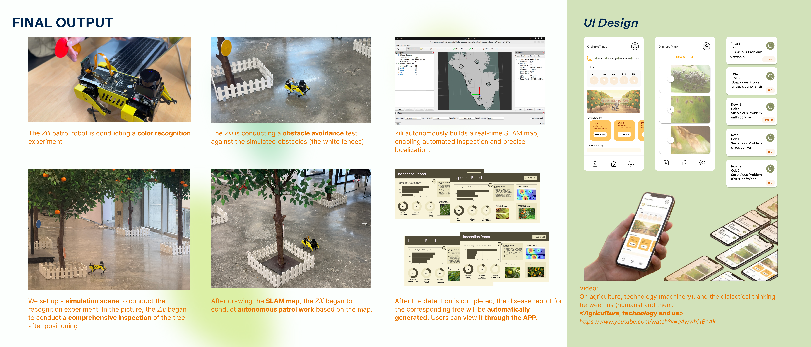
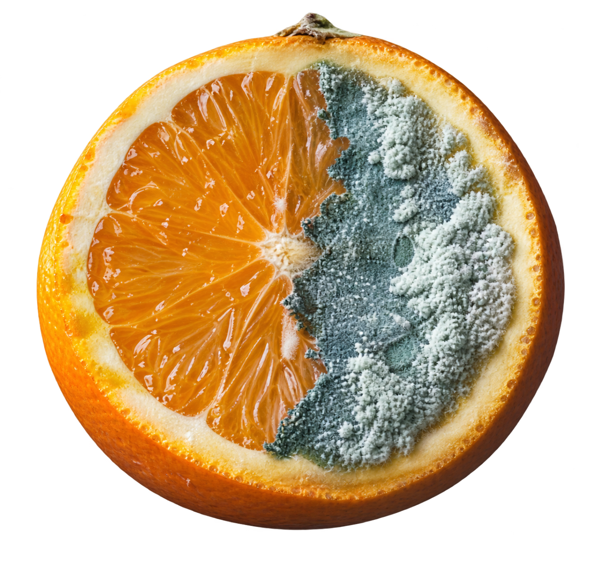
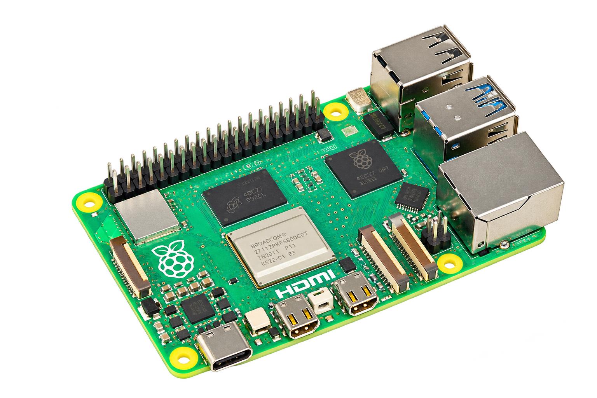
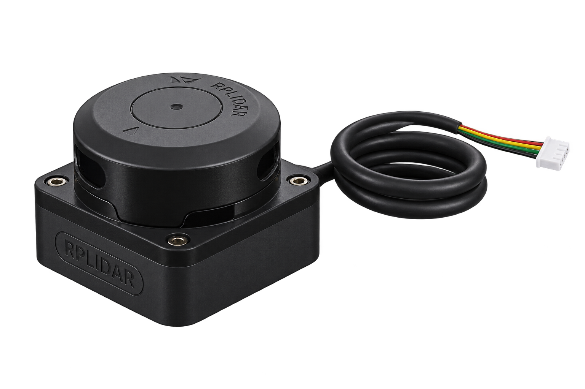
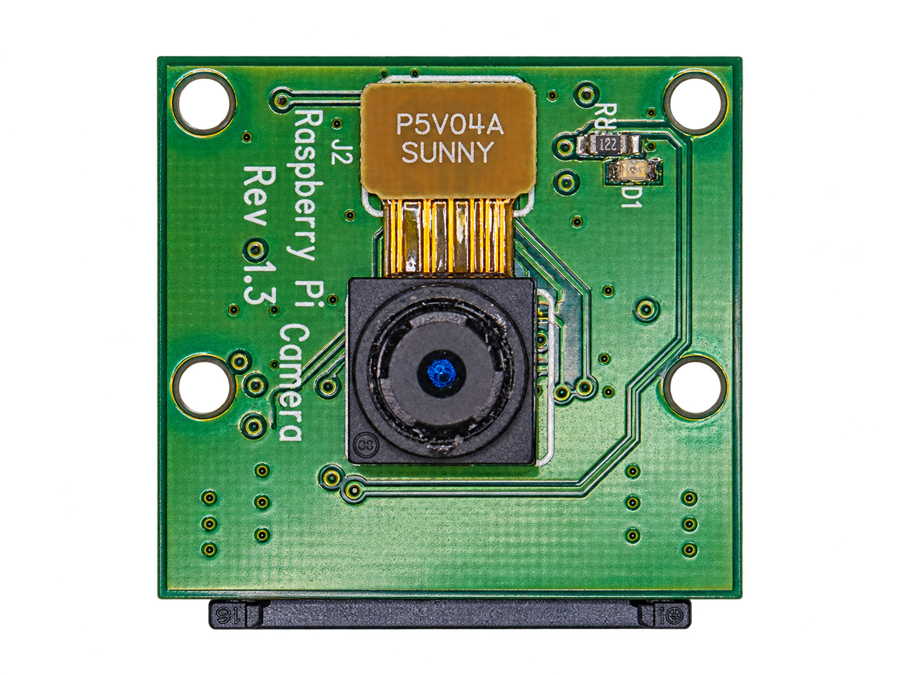

Reach the hidden areas
Dense foliage and uneven ground create a difficult inspection setting. The concept focuses on observations beneath the canopy, close to the tree.

Robot-assisted orchard inspection
A service concept connecting under-canopy observations, mapped locations and grower review to support inspection and follow-up.

The project began with inconsistent citrus quality and a question: could robotics help growers notice potential problems earlier and follow up more reliably?

Dense foliage and uneven ground create a difficult inspection setting. The concept focuses on observations beneath the canopy, close to the tree.
A finding needs more than a photograph. Its location and context must survive beyond the person who first noticed it.
Growers need to review a concern, decide what to do, and return to the same place to compare changes.
Field observations and interview material point to an experience-led workflow: visual checks, familiar routines, and limited location recording.
Growers described visual inspection and routine checks as their main approach. The service should make their observations easier to use, rather than bypass their judgement.
Field observations revealed that abnormal locations are often remembered rather than recorded. This makes a located observation a core design unit.
Interviewees expressed openness to reviewing robot findings on a phone. Their comments also highlighted the importance of fitting inspection into wider orchard work.
Each part of the concept addresses a break in the inspection journey, connecting a research insight to a specific design choice.
| Research / constraint | Design response | Why it matters |
|---|---|---|
| Under-canopy access and uneven ground | Explore a small quadruped with a camera and 2D LiDAR. | Investigate close-range inspection; real terrain capability still needs field testing. |
| Findings rely on memory | Connect an observation with its image and location. | Help the grower find the relevant tree again. |
| Growers use contextual expertise | Frame detections as suspicious findings for human review. | Avoid presenting an automated alert as a confirmed diagnosis. |
| Follow-up lacks a consistent record | Include review status, reports and a return visit in the service flow. | Support comparison and continuity beyond a single patrol. |
The service is designed as a loop: prepare, inspect, review and revisit. The app is where robot output becomes something a grower can assess.
Check the robot and its readiness.
Create a map and select an area.
Start, monitor or pause a patrol.
Examine the image and located finding.
Return and compare observations.
Robot status, patrol history and review priorities.
Inspect captured imagery before deciding what to do.
3 observations need your attention
Connect a suspicious finding with a tree and a review status.
Interface designs for the proposed review workflow. The findings screen is a refined presentation concept, with observations kept separate from confirmed diagnoses.
The prototype combines local sensing, onboard processing and a reporting pipeline. Each component plays a distinct role in the inspection workflow.

Onboard processing connects sensor input, detection logic and data transfer.

Distance scans support mapping, positioning and navigation.

Visual input provides the color features used in the recognition experiment.
Camera photograph: Sven.petersen / Wikimedia Commons, CC BY-SA 4.0. Background removed and orientation adjusted with AI; adapted image under the same license.
Color-range definitions provide the input rules for the controlled recognition experiment.
The launch configuration starts Cartographer nodes and occupancy-grid generation.
The email workflow associates detected categories with reports and includes cooldown and stability checks.
Implementation excerpts from the project documentation. Color-based detection demonstrates the pipeline; field disease classification requires separate validation.
A simulated orchard made it possible to explore color recognition, obstacle avoidance and map-based patrol before testing in an outdoor setting.
Colored markers were used to explore the detection pipeline. This does not establish real disease-recognition accuracy.
White fences and simulated trees provided a controlled setting for obstacle avoidance and patrol exploration.
The documentation includes a generated map and describes map-based patrol. Reliability across real orchard conditions is not quantified.
Report examples and app screens communicate the proposed review experience. End-to-end delivery and usability need further evidence.
Current evidence comes from controlled prototype experiments and interface designs. Disease-recognition accuracy, outdoor reliability and operational impact remain priorities for future field evaluation.
Prototype architecture: RGB camera and 2D LiDAR → Raspberry Pi processing → mapping / color-based detection → report and notification workflow. Color thresholds provide a test mechanism, not a substitute for a validated plant-disease model.
The strongest direction is a service that preserves the connection between a tree, an observation and a human decision. The next evaluation should test that connection in real use.
Measure coverage, localization and return-to-tree success under slopes, roots, changing light and foliage.
Use expert-labeled observations to assess missed findings and false alerts before making diagnostic claims.
Ask growers to find an issue, interpret its evidence and decide on follow-up. Observe errors and completion time.